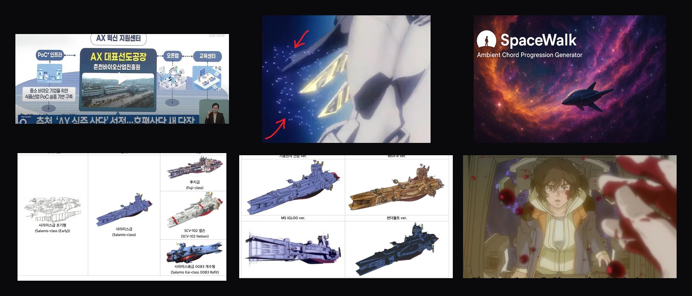
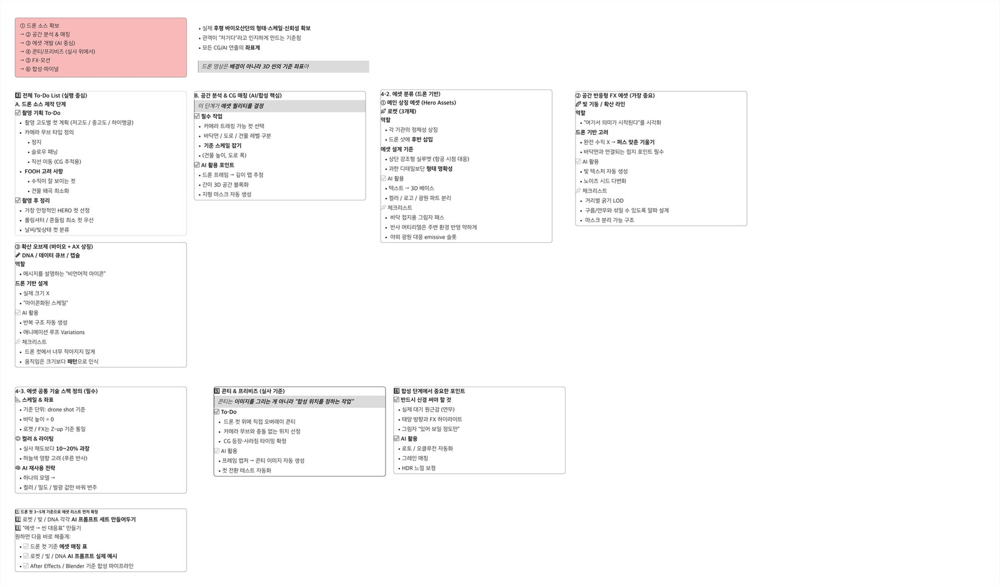

의뢰는 단순했습니다. 강원후평 AX Connect Meet-up의 오프닝을 여는 주제영상. 하지만 AX(AI 전환)는 슬라이드 위 키워드일 뿐, 그 자체로는 가슴이 뛰지 않습니다. 로고를 띄우고 자막을 깔면 ‘설명’은 되지만 ‘각인’은 되지 않죠.
무대는 정해져 있었습니다. 춘천 후평동 바이오산업단지. 이 실제 공간을 배경 그림이 아니라 이야기의 출발점으로 쓰기로 했습니다. “여기에서, 무언가가 시작된다” — 그 한 문장을 90초 동안 시각적으로 증명하는 것. 그게 이번 영상의 과제였습니다.
먼저 밝혀둡니다. 이 영상은 (주)더픽트 MICE팀이 진행한 행사의 콘텐츠로, (주)스톤키즈가 제작을 수주해 만든 작업입니다. 기본 기획 의도와 방향은 더픽트 측에서 전달받았고, 스톤키즈의 몫은 그 방향을 ‘어떻게 영상으로 보이게 할 것인가’ — 비주얼·연출·AI 제작 파이프라인을 설계하고 끝까지 완성하는 일이었습니다.
CHAPTER 02 — 발상의 전환
기관 로고 대신, 발진하는 로켓
전달받은 방향을 영상으로 옮기는 출발점은 여기였습니다. 행사를 이끄는 세 기관 — 강원창작개발센터·한림대학교·강원대학교 — 을 글자로 소개하는 대신, 각각을 상징하는 세 대의 로켓으로 의인화하는 것. AX는 미래로 ‘발진하는 힘’이니까요.
여기에 톤을 잡아준 레퍼런스가 기동전사 건담이었습니다. 단순히 ‘멋진 메카’를 베끼려는 게 아니라, 건담 특유의 ‘기계적 설득력’ — 장난감이 아니라 실제로 존재하고, 움직이면 위험할 것 같은 무게감 — 을 빌려오기 위해서였죠. 누리호 발사 영상, 실제 위성 사진까지 함께 모아 ‘진짜처럼 보이는 SF’의 결을 찾았습니다.

레퍼런스 보드 — 건담식 우주 함선 컨셉 · 실제 AX 혁신사업 자료 · 누리호/위성 톤 레퍼런스. ‘진짜처럼 보이는 SF’의 결을 먼저 합의했습니다.
CHAPTER 03 — 방법
가장 중요한 한 수 — 드론 실사를 ‘좌표’로
AI로 만든 에셋이 실사 위에서 떠 보이지 않으려면, 둘이 같은 공간에 ‘있어야’ 합니다. 그래서 제일 먼저 한 일은 후평동을 드론으로 촬영하는 것이었습니다. 단, 이 드론 영상은 배경이 아니라 3D 씬 전체의 기준 좌표입니다. 건물 높이, 도로 폭, 카메라 무브 — 모든 CG와 AI 연출이 이 실사 위에 좌표를 맞춰 얹힙니다.
이 모든 기획과 레퍼런스는 allo.io 캔버스 위에 한데 모아 정리했고, 그 위에서 제작은 여섯 단계로 흘러갔습니다.
06합성 · 파이널 — 대기 원근, 태양 방향, 접지 그림자를 ‘있어 보일 정도만’ 맞춰 마감.

실제 기획 보드(allo.io) — 드론 소스부터 합성·파이널까지, 단계별 To-Do와 ‘AI 활용 포인트’를 미리 못박아 두었습니다.
CHAPTER 04 — 도구의 여정
영상도, 이미지도, 음악도 — 전부 AI로
이번 프로젝트의 진짜 실험은 파이프라인 전체를 생성형 AI로 돌린 것입니다. 흐름은 이렇게 정리됐습니다.
↳Nano Banana 로 에셋 ‘이미지’를 생성 — 로켓 3종, 데이터 큐브, 네트워크 비주얼의 룩을 잡습니다.
↳Kling 2.1 로 그 이미지에 ‘움직임’을 부여 — 발진·하강·확산 모션을 영상으로 생성합니다.
↳생성된 컷을 드론 실사 위에 합성 — 좌표·대기·그림자를 맞춰 한 장면으로.
↳배경음악은 Suno 로 제작 — 긴장감에서 절정으로 차오르는 스코어를 직접 생성했습니다.
덧붙이자면, Nano Banana와 Kling 2.1이 ‘지금’ 기준 최고의 모델은 아닙니다. 다만 이 영상을 만들던 2025년 말 시점에는, 실사 합성에 필요한 일관성과 톤을 그나마 안정적으로 뽑아주던 당시로선 가장 나은 조합이었습니다. 도구는 빠르게 좋아지지만, 결국 중요한 건 ‘지금 손에 쥔 최선으로 끝까지 완성하는 것’이니까요.
디자인은 시종일관 ‘건담의 규칙’을 따랐습니다. 완벽한 곡선 대신 각진 실루엣과 패널 분할, 의미 없는 장식은 제거, 모든 발광은 ‘기능’을 설명할 것. 기획 단계에선 세 기관을 색으로 나눴습니다.
AX
블루 — 인공지능 전환
인력양성
그린 — 사람을 키운다
원천기술
골드 — 기술의 뿌리
다만 최종본에서는 이 셋을 ‘AX’ 키워드 하나로 정리했습니다. 인력양성·원천기술까지 모두 설명하기보다, 가장 큰 메시지 하나에 힘을 싣는 편이 90초 안에서 훨씬 선명했으니까요.
“건담은 ‘멋있게 보이기’가 아니라, ‘저게 움직이면 위험할 것 같은 느낌’을 만드는 디자인이다.”